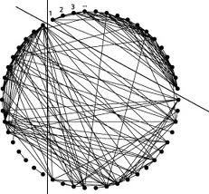

AUTOMATED ESSAY GRADER
Overall Score
| GRADE (0-5) | 3.61 |
|---|---|
| Spelling(0-5) | 4.94 |
| Grammar(0-5) | 2.89 |
| Coherence(0-5) | 3.00 |
Essay Statistics
| Word Count | 432 |
|---|---|
| Sentence Count | 19 |
| Paragraph Count | 5 |
| Average Sentence Length | 22.74 |
| Standard Deviation from the Average Sentence Length | 12.73 |

Spellings
Number of Misspelt Words ::5
Score :: 4.94
| Misspelt Word | Spelling Suggestions |
|---|---|
| Canidae | ['Candidate', 'Candida', 'Candide', 'Canine', 'Canadian', 'Candle'] |
| mammilian | ['mammalian', 'Maximilian', 'militiaman', 'Massimiliano', 'Macmillan', 'MacMillan', 'Maximilien'] |
| mDNA | ['DNA', 'm DNA', 'myna', 'Edna', 'Medina', 'Medan'] |
| Carnivora | ['Carnivore', 'Carnivorous', 'Carnival', 'California', 'Careworn', 'Canaveral', 'Conferral'] |
| familiaris | ['familiars', 'familiar is', 'familiar-is', 'familiarizes', 'familiarize', 'familiarity', 'familiarness', 'familiarizing', 'malarious'] |
Grammar
Score :: 2.89
| Sentences | Score |
|---|---|
| It is common for most breeds to shed this coat. | 5 |
| Dogs' value to early human hunter-gatherers led to them quickly becoming ubiquitous across world cultures. | 5 |
| This impact on human society has given them the nickname "Man's Best Friend" in the Western world. | 5 |
| None of these early domestication lineages seem to have survived the Last Glacial Maximum. | 5 |
| In some cultures, dogs are also an important source of meat. | 5 |
| Most breeds of dogs are at most a few hundred years old, having been artificially selected for particular morphologies and behaviors by people for specific functional roles. | 4 |
| The word "dog" may also mean the male of a canine species, as opposed to the word "bitch" for the female of the species. | 4 |
| The dog may have been the first animal to be domesticated, and has been the most widely kept working, hunting, and companion animal in human history. | 3 |
| The earlier specimens not only show shortening of the snout but widening of the muzzle and some crowding of teeth making them clearly domesticated dogs and not wolves. | 3 |
| Through this selective breeding, the dog has developed into hundreds of varied breeds, and shows more behavioral and morphological variation than any other land mammal. | 3 |
| Dogs perform many roles for people, such as hunting, herding, pulling loads, protection, assisting police and military, companionship, and, more recently, aiding handicapped individuals. | 3 |
| The term "domestic dog" is generally used for both domesticated and feral varieties. | 2 |
| The present lineage of dogs was domesticated from gray wolves about 15,000 years ago. | 2 |
| Remains of domesticated dogs have been found in Siberia and Belgium from about 33,000 years ago. | 1 |
| In 2001, there were estimated to be 400 million dogs in the world. | 1 |
| There are more sites of varying ages in and around Europe and Asia younger than 33,000 years ago but significantly older than 15,000 years ago. | 1 |
| Dog The domestic dog (Canis lupus familiaris), is a subspecies of the gray wolf (Canis lupus), a member of the Canidae family of the mammilian order "Carnivora". | 1 |
| For example, height measured to the withers ranges from a 2 inches (51 mm) in the Chihuahua to a 2 feet (0.61 m) in the Irish Wolfhound; color varies from white through grays (usually called "blue") to black, and browns from light (tan) to dark ("red" or "chocolate") in a wide variation of patterns; coats can be short or long, coarse-haired to wool-like, straight, curly, or smooth. | 1 |
| Although mDNA suggest a split between dogs and wolves around 100,000 years ago no specimens predate 33,000 years ago that are clearly morphologically domesticated dog. | 1 |

Coherence
Score :: 3.00
Essay
Dog
The domestic dog (Canis lupus familiaris), is a subspecies of the gray wolf (Canis lupus), a member of the Canidae family of the mammilian order "Carnivora". The term "domestic dog" is generally used for both domesticated and feral varieties. The dog may have been the first animal to be domesticated, and has been the most widely kept working, hunting, and companion animal in human history. The word "dog" may also mean the male of a canine species, as opposed to the word "bitch" for the female of the species.
The present lineage of dogs was domesticated from gray wolves about 15,000 years ago. Remains of domesticated dogs have been found in Siberia and Belgium from about 33,000 years ago. The earlier specimens not only show shortening of the snout but widening of the muzzle and some crowding of teeth making them clearly domesticated dogs and not wolves. There are more sites of varying ages in and around Europe and Asia younger than 33,000 years ago but significantly older than 15,000 years ago. None of these early domestication lineages seem to have survived the Last Glacial Maximum. Although mDNA suggest a split between dogs and wolves around 100,000 years ago no specimens predate 33,000 years ago that are clearly morphologically domesticated dog.
Dogs' value to early human hunter-gatherers led to them quickly becoming ubiquitous across world cultures. Dogs perform many roles for people, such as hunting, herding, pulling loads, protection, assisting police and military, companionship, and, more recently, aiding handicapped individuals. This impact on human society has given them the nickname "Man's Best Friend" in the Western world. In some cultures, dogs are also an important source of meat. In 2001, there were estimated to be 400 million dogs in the world.
Most breeds of dogs are at most a few hundred years old, having been artificially selected for particular morphologies and behaviors by people for specific functional roles. Through this selective breeding, the dog has developed into hundreds of varied breeds, and shows more behavioral and morphological variation than any other land mammal. For example, height measured to the withers ranges from a 2 inches (51 mm) in the Chihuahua to a 2 feet (0.61 m) in the Irish Wolfhound; color varies from white through grays (usually called "blue") to black, and browns from light (tan) to dark ("red" or "chocolate") in a wide variation of patterns; coats can be short or long, coarse-haired to wool-like, straight, curly, or smooth. It is common for most breeds to shed this coat.
The domestic dog (Canis lupus familiaris), is a subspecies of the gray wolf (Canis lupus), a member of the Canidae family of the mammilian order "Carnivora". The term "domestic dog" is generally used for both domesticated and feral varieties. The dog may have been the first animal to be domesticated, and has been the most widely kept working, hunting, and companion animal in human history. The word "dog" may also mean the male of a canine species, as opposed to the word "bitch" for the female of the species.
The present lineage of dogs was domesticated from gray wolves about 15,000 years ago. Remains of domesticated dogs have been found in Siberia and Belgium from about 33,000 years ago. The earlier specimens not only show shortening of the snout but widening of the muzzle and some crowding of teeth making them clearly domesticated dogs and not wolves. There are more sites of varying ages in and around Europe and Asia younger than 33,000 years ago but significantly older than 15,000 years ago. None of these early domestication lineages seem to have survived the Last Glacial Maximum. Although mDNA suggest a split between dogs and wolves around 100,000 years ago no specimens predate 33,000 years ago that are clearly morphologically domesticated dog.
Dogs' value to early human hunter-gatherers led to them quickly becoming ubiquitous across world cultures. Dogs perform many roles for people, such as hunting, herding, pulling loads, protection, assisting police and military, companionship, and, more recently, aiding handicapped individuals. This impact on human society has given them the nickname "Man's Best Friend" in the Western world. In some cultures, dogs are also an important source of meat. In 2001, there were estimated to be 400 million dogs in the world.
Most breeds of dogs are at most a few hundred years old, having been artificially selected for particular morphologies and behaviors by people for specific functional roles. Through this selective breeding, the dog has developed into hundreds of varied breeds, and shows more behavioral and morphological variation than any other land mammal. For example, height measured to the withers ranges from a 2 inches (51 mm) in the Chihuahua to a 2 feet (0.61 m) in the Irish Wolfhound; color varies from white through grays (usually called "blue") to black, and browns from light (tan) to dark ("red" or "chocolate") in a wide variation of patterns; coats can be short or long, coarse-haired to wool-like, straight, curly, or smooth. It is common for most breeds to shed this coat.
Karthik R Prasad, Aparna N, Apoorva Rao B
Guide: Dr.B Narsing Rao
Guide: Dr.B Narsing Rao